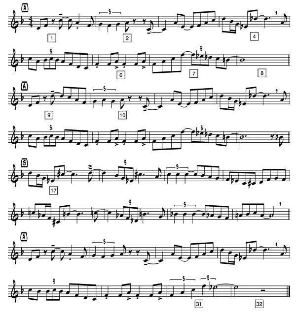

Miles Davis, who has been discussed in the Cut 'n' Mix, Fusion and Modal & Free Jazz sections of this course, was also one of the most important contributors to the cool jazz style. During the mid '40's, he played and recorded with bop saxophonist Charlie Parker. While still playing and recording with Parker and feeling the need for a change of direction in his music, Miles put a 9-piece band (a nonet) together in the late '40's with another of cool jazz's important contributors, composer/arranger Gil Evans. Their idea was to come up with music that embraced more refined, cerebral sensibilities that were not present in the freewheeling, highly charged bop style.
Evans, baritone saxophonist Gerry Mulligan, pianist John Lewis and John Carisi wrote the arrangements. The often lush harmonies, orchestral colors and contrapuntal lines (two or more melodies being played at the same time) found in the arrangements gave the impression of a small big band rather than that of a big small band or combo. The arrangements themselves took on as much importance as the solos creating almost seamless transitions from ensemble sections where all of the horns were playing to a solo and back again to the ensemble.
The nonet played its only live engagement for two weeks at the Roost in 1948. In 1949-50 the group recorded 11 songs at the Capitol Records Studio in New York . First released in the early '50's on 78 rpm records (which may account for the short length of the performances – 78's could only handle 3-4 minute of music per side), all 11 of the songs were released in 1957 on a 12" LP entitled The Birth of the Cool. The live engagement and the recording constituted the entire output of the band!
While not a big seller at the time, its effect on jazz musicians was profound. Cool jazz had matured into a viable style that others, especially on the West Coast, began to explore and are still exploring today.
Let's listen to a cut from The Birth of the Cool. "Boplicity", written by Miles Davis and arranged by Gil Evans. Evans was a master of combining advanced harmonies with a splendid ear for orchestration. The addition of a french horn and a tuba, instruments not usually found modern jazz bands, to the lineup of players and Evans' arrangement with its flowing lines creates a peaceful, relaxed feeling —i.e. Cool. The solos are low-keyed and devoid of fast, technical passages. The song is in an A-A-B-A form, each section 8 measures long.

By the way, do you remember what an A-A-B-A song form is? If not follow this breadcrumb trail starting from the MUS333 Homepage : Course Content > Introduction > How are people listening? > Basic Materials of Music > Song Form. The form of "Boplicity" fits perfectly into the A-A-B-A scheme both rhythmically and harmonically. Melodically, however, a couple of notes have been changed in the 2nd and 3rd A sections. While you are listening to the recording, have the music to "Boplicity" up on your screen. Compare measures 1 and 2 with measures 9 and 10. Now listen again and compare measures 7 and 8 with measures 31 and 32. You'll hear slight differences in the melody. If you aren't able to hear the differences, look at the music one more time and see that in measure 9 the notes go higher up on the staff and have a new rhythm pattern compared to measure 1. In measure 10 the 2nd note goes up rather than down as in measure 2. Measures 31 and 32 have a totally different rhythm pattern than measures 7 and 8. While the differences in the melody are slight, we want to be sure that you notice them.
Another thing to be aware of is that during the melody up until the baritone sax solo starts and the last eight measures of the recording the horns are in rhythmic unison. The notes each horn might be playing are not the same but the rhythm used in playing them is—rhythmic unison.
Lee Konitz (alto, sax); Gerry Mulligan (baritone sax); Miles Davis (trumpet); J.J. Johnson (trombone); Sandy Siegelstein (french horn); Bill Barber (tuba); John Lewis (piano); Nelson Boyd (bass); Kenny Clarke (drums)
0:00 melody – 1st "A" section
0:14 2nd "A" section
0:27 "B" section
0:42 last "A" section
0:56 2nd chorus: baritone sax solo on 1st two "A" sections
1:24 instrumental interlude – 1st 6 measures of "B" section
1:35 trumpet solo – last 4 measures of "B" section
(The "B" section was extended by 2 measures to 10 measures rather than 8.)
1:42 instrumental interlude on last "A" section
1:58 3rd chorus: trumpet solos on 1st two "A" sections, horns play background
2:25 piano solos on "B" section, horns play background
2:40 last "A" section of melody to end
Before leaving "Boplicity" let's take another look at the printed music. You are probably wondering why punctuation marks and mathematical symbols appear in the music. What do dashes, dots and commas have to do with music making? Why do musicians pay attention to "greater than" (>) symbols and to "is greater than or equal to" (≥) symbols? To musicians playing any style of music, these punctuation marks and math symbols have nothing to do with either English or Mathematics. These dashes, dots, and commas, are called "articulation marks" and tell the player how to play the note that one of them or a combination of them is attached to.
In measure 1 you'll se a dash above the third note. It's commonly called a "long mark" and it tells the player to play the note full value, in this case a quarter note (two eighth notes tied together). There is no audible space between it and the note that follows every time you see a dash – the notes are connected to one another.
The note that follows has a dot underneath it. The dot or "staccato mark" means that the note is played shorter than is printed – often half of its value. Here the quarter note sounds like an eighth note – half of a quarter is an eighth. Listen for a short but audible space between it and the next note every time you see a dot.
Take a look at measure 4 and find the comma above the staff before the last note. The comma is called a "breath mark." For every one in the band it means that the note just before the breath mark (comma) is to be played a bit shorter so that there is an audible space between it and the next note. (Probably for the wind instrument players (saxes, trumpets and trombones) it's a good place to take a breath, too!) The breath mark differs from the dot in that the note it follows is note played half of its value but just a tad shorter. As you listen to the recording listen for the space between the notes separated by a breath mark.
Measure 6 has the first of the math symbols in it – the greater than symbol (>). To the musician this symbol is called an "accent mark." A note with an accent mark placed above or below it is given a little more emphasis, a slight increase in volume.
The math symbol over the last note in measure 17 (≥) is the "is greater than or equal to" symbol. To the musician it's a combination of two articulation marks – in this case an accent mark we just discussed along with a long mark talked about earlier. So we have a note that is emphasized and played full value.
Now go back and listen to the track one more time and pay particular attention to the articulation marks.
The Miles Davis and Gil Evans collaborations continued on well into the '50's with the 1957 release of Miles Ahead, 1958 release of Porgy and Bess and the 1959 release of Sketches of Spain.
Evans arranged the music from George Gershwin's Broadway show Porgy and Bess for Miles and big band. The arrangement of the song "Summertime" continues the cool feeling established with The Birth of the Cool recordings. Again you'll hear lush harmonies and orchestral colors heard in the earlier recording this time on a larger scale as the band playing behind Miles is much larger – twenty players compared to nine. Evans added French horns, a tuba and alto flutes to the saxes, trumpets and trombones normally found in a big band creating unusual, yet engaging sonorities.
After a straightforward, unadorned performance of the familiar melody, Davis plays three solo choruses accompanied by a light, unobtrusive band background. Miles is playing with a harmon mute throughout the recording.

The top line of the music is the melody – what Miles played. The bottom line is the accompanying (or counter) melody the band played throughout the recording.
0:00 Miles plays the 16 measure long melody with counter melody
0:35 1st trumpet solo chorus – counter melody continues
1:10 2nd trumpet solo chorus – counter melody continues – flutes louder than the other horns
1:46 3rd trumpet solo chorus – counter melody continues – played as in the beginning
2:22 Miles plays the melody this time taking great liberties – counter melody continues
3:03 Band slows down
3:16 Summertime ends
Here's a short clip of Miles Davis and Gil Evans working together on a 1959 television show. They are playing a Dave Brubeck composition called "The Duke." Gil is the one waving his arms as he is about to take off! Believe it or not there was live jazz performed on television in the 1950's. Now that's cool!